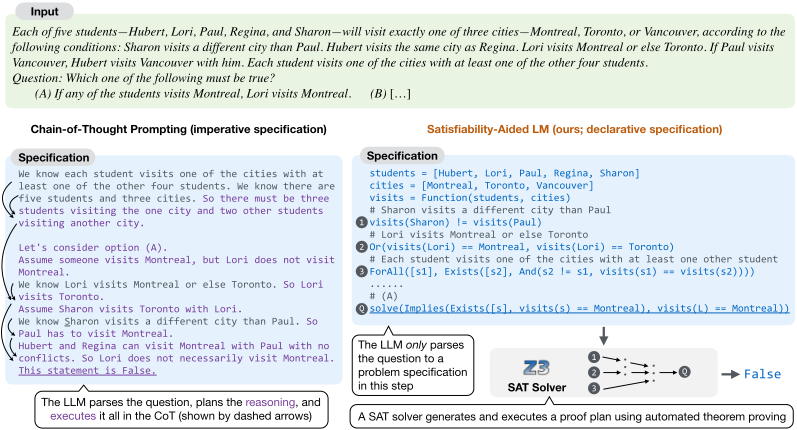
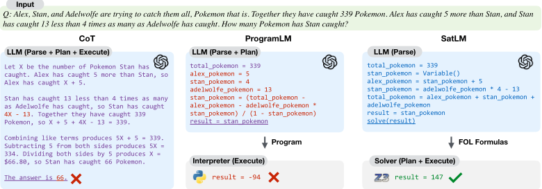
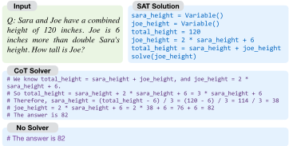
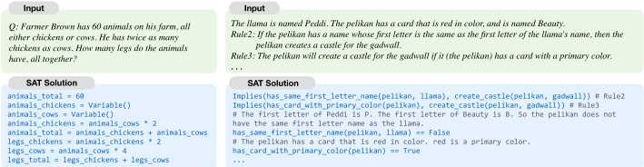

SATLM：使用声明式提示的可满足性辅助语言模型（Satisfiability-Aided Language Models Using Declarative Prompting）
该论文针对 CoT 与 program-aided LM（如 PROGLM）在需要规划与搜索的约束求解类任务上易出规划错误的问题，提出 SATLM：LLM 只负责把自然语言解析为声明式规范（一组接近 z3py 语法的逻辑公式），规划与执行全部卸载给 Z3 等 SAT/SMT 求解器，从而保证执行正确性。在 8 个数据集、4 类任务上，SATLM 一致超过 COT 与 PROGLM：GSM-SYS 上比 PROGLM 高 23%，并在 LSAT（30.9%→37.4%）与 BOARDGAMEQA（73.9%→80.7%）刷新 SoTA。消融显示声明式提示本身即比命令式 CoT 更易被 LLM 解析，且求解器返回的 UNSAT/AMBIG 信号可支持高选择性准确率的弃答。对团队而言，这是'LLM 解析 + 外部工具求解/验证'的工具调用范式与声明式提示模式的代表性范例。
CoT 与 program-aided LM 采用命令式（imperative）求解范式，把推理过程写成按执行顺序链接的步骤，适合前向推理，但在需要复杂规划与搜索的约束求解类推理任务上会犯规划错误（推理链错误）与执行错误（计算错误）；论文希望让 LLM 扬长避短——只做自然语言到形式规范的理解，把规划与执行交给可靠的符号求解器。
基于 parse-plan-execute 三步框架：用 few-shot 声明式提示让 LLM 将 NL 问题解析为声明式任务规范（NL 以注释形式与 Python 风格逻辑公式交错，兼容 z3py，经基于 regex 的后处理转为真实 z3py 代码）；将所有任务统一表述为一阶逻辑 SAT 问题，调用 Z3 等 SMT 求解器求满足赋值得到答案；求解器保证执行正确并可产出有效性证明，且能返回 ERROR/UNSAT/AMBIG 三类反馈信号用于选择性弃答。
在 GSM-SYS（GSM 中涉及方程组的挑战性子集）上，SATLM 比 PROGLM 高 23%：greedy decoding 69.4%、self-consistency 80.9%，超过 PROGLM 与 COT 20% 以上
在 GSM 上 self-consistency 达到 84.8%，超过使用全量训练集与相同 LLM 的 DIVERSE（82.3%）与 LEVER（84.5%）
LSAT SoTA 从 30.9% 提升到 37.4%；BOARDGAMEQA SoTA 从 73.9% 提升到 80.7%
ALGEBRA 上比 COT 与 PROGLM 高 20% 以上
STREGEX：greedy 44.0% vs PROGLM 37.1%；self-consistency 超过此前 SoTA 55.6%
消融：仅用声明式提示+CoT 求解（SATCOTSOLVER）也比 COT 在 GSM-SYS/CLUTRR 上分别高 7.9%/8.1%，说明声明式提示本身即有效；SATCOTSOLVER 的错误多为规划错误
选择性预测：SATLM 的 selective accuracy 一致优于 PROGLM，GSM-SYS 上 77% vs 45%
在 gpt-3.5-turbo、text-davinci-003、code-davinci-001 上趋势与 code-davinci-002 一致，方法跨 LLM 适用，且对 exemplar 集合选择不敏感
与 PROGLM/PAL 等让 LLM 生成命令式程序不同，SATLM 只让 LLM 做解析、生成声明式逻辑规范，把规划与执行统一卸载给单一 SAT 求解器；相比 Faithful CoT 使用任务特定求解器，本文所有任务统一为一阶逻辑 SAT 实例；相比并发工作（PDDL 规划的 Liu et al.、数学专用 PySym 的 He-Yueya et al.），覆盖算术/逻辑/符号推理与 regex 合成等更广任务，领域无关。
相关度级别：high
命中能力域：3.2 提示工程 | 3.3 Agent 架构与工具使用 | 3.5 评测与可靠使用
理由：声明式提示（declarative prompting）是一种可直接复用的提示模式，论文证明'先声明式建模、再求解'的两阶段提示优于单步命令式 CoT，直接命中 3.2；'LLM 只做解析 + SAT solver 做规划与执行'是典型的工具调用与单 Agent 执行可靠性设计，对应 3.3 的工具/函数调用与执行可靠性；利用求解器 ERROR/UNSAT/AMBIG 反馈实现弃答（selective prediction）以及跨 8 个数据集、多个 LLM 的系统评测，对应 3.5 的可靠使用与评测方法。团队构建工程自动化工具时，凡涉及约束、规则、调度类任务均可借鉴该范式。
建议动作：深入精读并做内部分享
arXiv:2305.09656v3 [cs.CL] 11 Oct 2023
Xi Ye Qiaochu Chen Isil Dillig Greg Durrett
计算机科学系
德克萨斯大学奥斯汀分校 {xiye,qchen,isil,gdurrett}@cs.utexas.edu
先前的工作将大语言模型（LLM）中的思维链（CoT）提示与程序化表示相结合，以实现有效且透明的推理。虽然这种方法对于仅需前向推理的任务（例如简单算术）效果良好，但对于需要更复杂规划与搜索的约束求解问题，其效果较差。本文提出一种新的可满足性辅助语言建模（SATLM）方法，用于提升 LLM 的推理能力。我们使用 LLM 生成声明式的任务规范，而非命令式程序，并利用现成的自动定理证明器来推导最终答案。该方法具有两个关键优势。声明式规范比推理步骤更贴近问题描述，因此 LLM 能够更准确地从描述中解析出该规范。此外，通过将实际推理任务交由自动定理证明器完成，我们的方法可以保证答案相对于所解析规范的正确性，并避免求解过程中的规划错误。我们在 8 个不同的数据集上对 SATLM 进行了评估，结果表明其始终优于命令式范式下的程序辅助语言模型（program-aided LMs）。具体而言，在 GSM 算术推理数据集的一个具有挑战性的子集上，SATLM 比程序辅助语言模型高出 23%；SATLM 还在 LSAT 和 BOARDGAMEQA 上取得了新的 SoTA 成绩，超越了此前在相应训练集上训练的模型。1
利用大型语言模型（LLM）执行复杂推理一直是近期研究的核心方向（Brown et al., 2020; Chowdhery et al., 2022; Rae et al., 2021; Zhang et al., 2022b）。诸如草稿本（scratchpad）（Nye et al., 2021）或思维链（chain-of-thought, CoT）提示（Wei et al., 2022c）等技术，使 LLM 能够在做出预测之前遵循一系列推理步骤。这一范式在各种多步推理任务上都很有效，尤其是那些具有固定前向推理过程的任务（Wei et al., 2022c），例如拼接多个单词的最后一个字母。然而，当扩展到涉及密集计算（Gao et al., 2023）或长推理步骤序列（Creswell et al., 2023; Saparov and He, 2023; Ribeiro et al., 2023）的问题时，CoT 提示可能会表现不佳。
解决一个复杂推理问题涉及三个概念性组成部分：将自然语言描述解析为问题的表示、推导出解决问题的计划，以及执行该计划以获得答案。近期关于改进 CoT 提示的工作侧重于通过为 LLM 增配符号执行器（如 Python 解释器）来修复执行错误，这在算术和符号推理任务上带来了性能提升（Gao et al., 2023; Chen et al., 2022; Lyu et al., 2023）。然而，CoT 提示（Wei et al., 2022c; Nye et al., 2021）及其执行器增强的后续方法（Gao et al., 2023; Chen et al., 2022; Lyu et al., 2023）都面向命令式的求解过程：CoT 或程序按照执行顺序将推理过程指定为链式步骤（Wei et al., 2022c; Gao et al., 2023）。虽然这对于自然语言已经为推理提供了足够清晰“计划”的问题行之有效，但对于如图 1 所示那样未给出此类计划的推理问题，它只能取得有限的成功（Ribeiro et al., 2023）。这类问题通常陈述一组前提和约束，并提出需要通过复杂规划对输入进行演绎推理的问题，这即使对于现代 LLM 而言仍然具有挑战性（Valmeekam et al., 2022）。
1 代码可在 https://github.com/xiye17/SAT-LM 获取。
第 37 届神经信息处理系统大会（NeurIPS 2023）。

我们的工作既解决执行错误，也解决更为重要的规划错误。我们提出了使用声明式提示的可满足性辅助语言建模（SATisfiablity-aided Language Modeling, SATLM）。其核心思想是将自然语言（NL）推理问题转化为可满足性（简称 SAT）问题。如图 1（右）所示，给定一个自然语言问题，我们提示大语言模型（LLM）将其解析为一个由一组逻辑公式构成的 SAT 问题规约（specification），然后通过调用 SAT 求解器来获得解。2 LLM 专注于理解问题中陈述的前提条件，而求解器则被用于规划推理过程。此外，求解器保证了执行的正确性，这类似于程序辅助语言模型（PROGLM）中所使用的解释器。
我们在涵盖 4 类任务的 8 个数据集上评估了我们的方法，这些任务包括算术推理、逻辑推理、符号推理以及一个正则表达式（regex）合成任务。我们的 SATLM 在所有数据集上都始终优于思维链（CoT）和 PROGLM，且通常领先幅度很大。在 GSM-SYS 上，SATLM 比 PROGLM 高出 23%；在 GSM 上，SATLM 使用少样本提示（few-shot prompting）结合自洽性解码（self-consistency decoding）达到了 84.8%，与使用完整训练集和相同 LLM 的已有工作持平（Li et al., 2022b; Ni et al., 2023）。SATLM 还在 LSAT（Zhong et al., 2022）、BOARDGAMEQA（Kazemi et al., 2023）和 STRUCTUREDREGEX（Ye et al., 2020）上取得了新的 SoTA 成绩。
我们的分析阐明了 SAT 求解器与声明式提示的结合为何如此有效。我们发现：（1）程序辅助语言模型常常会犯规划错误（例如错误地对方程进行操作），而这类错误可以由 SAT 求解器来弥补。（2）强制 LLM 显式地陈述声明式规约，甚至能够改进原始的 CoT 提示。（3）如果 SATLM 将问题解析为不可满足或存在歧义的规约，它可以放弃给出不确定的预测，从而在选择性预测（selective prediction）设置下取得更高的准确率（El-Yaniv and Wiener, 2010）。
2 在此，我们用 SAT 求解器泛指任何用于检查形式逻辑公式可满足性的自动推理工具。因此，本文中的“SAT 求解器”也包括一阶定理证明器（first-order theorem provers）和 SMT 求解器。
本工作旨在应对利用大语言模型（LLM）求解自然语言（NL）推理任务的挑战。从高层来看，一个 NL 推理任务是对关于某些对象的一组事实 Φ（例如命题或约束）以及与这些对象相关的一个问题 Q 的自然语言描述。推理任务的目标是找出一个能够从 Φ 所提供信息中推导出的 Q 的答案。
我们将求解 NL 推理任务的一般过程概念化为三个步骤：解析（parsing）、规划（planning）和执行（execution）。给定自然语言输入 x_test = (NL(Φ), NL(Q))，它同时描述了 Φ 与 Q。我们的第一步是将这段自然语言解析为预测的任务规约 (ˆΦ, ˆQ)，即对事实和查询的形式化描述。
给定 (ˆΦ, ˆQ)，规划步骤随后要确定一个推理步骤序列 [r_1, …, r_n]，该序列从任务规约开始，以问题的答案结束。每一步都涉及调用某个函数（例如算术运算符或逻辑运算符），该函数产生可在后续步骤中使用的中间结果。规划既可以由 LLM 通过思维链（CoT）提示来制定，也可以像本文工作那样由符号求解器来制定。最后，我们用符号执行器（我们的方法）或 LLM 系统地执行该规划，并将最后一步 r_n 的输出作为答案返回。
我们的解决方案正是严格按照这三个步骤来处理该问题。
**解析为声明式规约** 我们提示 LLM 为 x_test 生成一个规约 s_test。请注意，从该描述到规约的转换并不简单直接，对大多数任务而言无法以基于规则的方式完成；图 4 展示了一些涉及常识推理的尤为复杂的例子。规约 s_test 是由 NL 语句与逻辑公式（LF）交错构成的序列：s_test = [z_1, …, z_n]，且 z_i ∈ Σ_NL ∪ Σ_LF，其中 Σ_NL 与 Σ_LF 分别表示自然语言和逻辑公式的空间。我们通过从 s_test 中取出所有属于 Σ_LF 的 z_i 来导出形式化规约 (ˆΦ, ˆQ)。图 1 右侧给出了一个规约示例。我们的规约是声明式的，因为在此阶段我们并不让 LLM 显式地生成各个 r_i。
**利用 SAT 求解器进行规划与执行** 给定预测的形式化规约 (ˆΦ, ˆQ)，我们希望从中推导出查询 ˆQ 的最终答案。若 ˆΦ 逻辑蕴含 ˆQ = a（记作 ˆΦ |= ˆQ = a），我们便称解 a 是正确的。我们工作背后的关键洞察是将规划与执行两个步骤都交由 SAT 求解器完成。具体而言，我们使用 SAT 求解器在如下公式中为 a 寻找满足赋值：
其中 V 表示 ˆ Φ 中所使用的全部变量构成的集合，ˆ Q ∈ V 是与解相对应的一个变量。注意，该公式中唯一的自由变量是 a；因此，求解器返回的对 a 的赋值即为该推理问题的最终答案。
上述方法具有两个重要优势。首先，由于 SAT 求解器是可靠的（sound）（即它产生的任何赋值都满足公式），解在构造上就是正确的。因此，只要假设解析是正确的，且 ˆ Φ 和 ˆ Q 与 Φ 和 Q 相匹配，我们便得到了解确实正确的证明。其次，规划步骤由求解器在内部完成，而推理步骤链 [ r 1 , . . . , r n ] 可以通过要求求解器给出公式 ˆ Φ ⇒ ˆ Q = a ∗ 的有效性证明来获得，其中 a ∗ 是 SAT 求解器产生的赋值。我们所考虑的所有求解器都能产生这样的有效性证明（例如，以归结反驳（resolution refutation）的形式（Davis and Putnam, 1960））。
与先前工作的比较 先前基于自然语言（NL）的 LLM 推理方法同样可以纳入上述“解析—规划—执行”（parse-plan-execute）框架中。具体而言，思维链（chain-of-thought, CoT）范式（Nye et al., 2021; Wei et al., 2022c）使用 LLM 来执行全部三个步骤。程序辅助语言模型（program-aided language models）（Gao et al., 2023; Chen et al., 2022; Lyu et al., 2023）则将解析与规划步骤合并，利用 LLM 推导出与规划相对应的程序。3 随后，最终执行步骤通过使用底层编程语言的解释器来得到最终答案。与这些方法不同，我们的工作仅使用 LLM 来执行解析步骤——对 LLM 而言，解析是比规划更容易的问题。

我们在图 2 中展示了一个将 COT 和 PROGLM 与我们的方法进行对比的具体示例。COT 使用 LLM 完成全部三个步骤。例如，输出中的 ' Alex has caught X +5 ' 对应于 NL 输入中的 ' Alex has caught 5 more than Stan '（解析）。随后，COT 通过 ' Combining like terms ... ' 来决定如何求解变量 X（规划）。与此同时，它还在自身的生成中直接推导出等式 ' 5 X = 334 '（执行）。然而，COT 在 ' X +5 ' 和 ' 4 X - 13 ' 这两个等式中错误地使用了同一个 X，而这两处本应使用不同的变量。（注意，如果 Stan 和 Adelwolfe 在相应 NL 子句中的角色互换，那么 4 X - 13 就是正确的。）通过让 LLM 只专注于翻译，除了消除规划错误之外，我们还发现这类错误的发生率有所降低。值得注意的是，PROGLM 并未解决规划错误的问题，因为它在此阶段并不使用程序化操作。与 PROGLM 不同，SATLM 仅解析输入问题中提供的信息，并将解析得到的公式传递给求解器以同时完成规划与执行，从而得到正确的结果。
我们使用少样本提示（few-shot prompting）来为测试输入 x_test 生成规范 s_test。具体而言，我们在提示中包含少样本示例 (x_i, s_i)_{i=1}^k，将测试输入 x_test 附加在提示之后，并让 LLM 为 x_test 补全规范，即 s_test ∼ p(x_test | x_1, s_1, ..., x_k, s_k)。
我们在图 1 中展示了一个逻辑推理任务的规范示例，并在图 2 中展示了一个算术推理任务的规范示例。可以观察到，在这两个示例中，我们的 SAT 公式（即 Σ_LF 中 [z_1, ..., z_n] 的逻辑公式）均按照 Python 语法编写为代码，而 Σ_NL 中的自然语言则使用注释语法编写。我们发现，将此处的语言以注释形式包含进来有助于提高翻译的保真度。我们的声明式提示还遵循先前工作（Gao et al., 2023; Lyu et al., 2023）中提示的风格，使用了有意义的变量名和描述性注释。最后，我们使用 Python 而非专门的领域特定语言（DSL），以便与模型的预训练数据更加契合（Ouyang et al., 2022; Chen et al., 2021）。有关 SAT 规范的更多细节，请参见附录 F。
3 对于“忠实思维链”（faithful chain-of-thought）而言也是如此（Lyu et al., 2023）。该论文描述了将这一过程分解为“翻译”和“求解”两个阶段的做法，其中翻译步骤同时对应于我们的解析阶段和规划阶段。该方法中用于 CLUTRR 等任务的求解器并不执行额外的规划，而只是执行 CoT 中概述的步骤。此外，他们的方法使用 Python 来执行，而我们的方法则使用 SAT 和 Z3 作为统一的求解框架。
4
SAT 问题 一个 SAT 问题是一个三元组 P = (Φ, T, Q)，其中 Φ 是某一理论 T⁴ 下的一阶逻辑公式集合，Q 是所关注的查询。我们用 Variable(P) 表示 Φ 中的自由变量。Q 仅包含 Variable(P) 中的变量。SAT 问题的一个例子是 P = ({x + y = 3, x - y = 1}, T_E ∪ T_Z, x - 2)，其中 T_E ∪ T_Z 表示公式中仅允许使用等式和整数上的线性算术运算。
文献中的许多自然语言（NL）推理任务都可以形式化为 SAT 问题，并使用现成的求解器加以求解。对于算术推理（arithmetic reasoning），SAT 公式 Φ 是编码变量之间关系的等式，而 t 指定问题所询问的目标变量（见图 1）。对于逻辑推理（logical reasoning），Φ 编码前提条件，t 指定问题所提出的目标陈述。我们还证明，符号推理（symbolic reasoning）、正则表达式合成（regex synthesis）以及其他涉及对数组或字符串进行推理的问题都可以在这一框架下处理。
与 Faithful CoT（Lyu et al., 2023）等先前工作针对不同问题类型使用任务特定的形式化表示和任务特定的求解器不同，本文中的所有任务都被形式化为可由单一求解器求解的通用 SAT 实例（如本节后文所述）。
将 NL 解析为 SAT 问题 回顾一下，我们从测试 NL 任务 x_test 得到规范说明 s_test。为了从 s_test 导出 SAT 问题 P_test = (Φ̂_test, T_test, Q̂_test)，我们通过取出 s_test 的 Σ_LF 中的所有 z_i，来提取约束 Φ̂_test 和目标表达式 Q̂_test（在我们的提示中由 solve 标记）。我们通过分析 Φ̂_test 中的公式来确定理论 T_test。
求解 SAT 问题 给定 SAT 问题 P，我们调用自动定理证明器（automated theorem prover）（例如我们的实现中所使用的 Z3 SMT 求解器（De Moura and Bjørner, 2008））来获得一个模型 M，该模型在理论 T 下将每个自由变量 v ∈ Variable(P) 映射到一个具体值。最终答案通过将 Q̂ 中的每个自由变量 v_i 替换为 M[v_i] 而得到。例如，给定问题 ({x + y = 3, x - y = 1}, T_E ∪ T_Z, x - 2)，我们让求解器在理论 T_E ∪ T_Z 下求出约束 x + y = 3 ∧ x - y = 1 的一个解，得到 x = 2 和 y = 1。然后，为了得到最终答案，我们在目标表达式 x - 2 中将 x 替换为 2，得到结果 2 - 2 = 0。
来自求解器的反馈信号 给定在 P 中指定的一组 ˆΦ，SAT 求解器将尝试搜索一个满足 ˆΦ 中所有约束公式的可满足赋值 M。如果求解器在一定时间限制内成功找到这样的赋值，它将使用 M 来评估查询 ˆQ 并返回最终结果，否则即为超时。然而，对于存在问题的 P，求解器可能无法找到解，并以以下类型之一提供反馈：(1) 执行错误（ERROR），由无效公式（例如语法错误）或超时引起；(2) 不可满足公式（UNSAT），由 ˆΦ 中相互冲突的公式引起（例如 ˆΦ = {x = y + 1, y = x + 1}）（无可行解）；(3) 歧义公式（AMBIG），由存在多个可行解引起（例如 ˆΦ = {x = y + 1, x > 0}）。导致 UNSAT 或 AMBIG 的 SAT 公式示例见附录 G。
与 PROGLM 中使用的只能检测代码执行错误的执行器不同，SAT 求解器除了 ERROR 之外还能发现 UNSAT 和 AMBIG。我们将证明，在选择性预测（selective prediction）设置（El-Yaniv and Wiener, 2010）下，这一独特特性使我们的 SATLM 能够比 PROGLM 更有效地放弃可能不正确的预测（第 4.4 节）。
任务 我们的工作研究了涵盖 4 类任务的 8 个数据集，重点关注算术推理和逻辑推理任务。我们在附录 A 中列出了所有数据集的统计信息。对于算术推理，我们使用 GSM（Cobbe et al., 2021）、GSM-SYS 和 ALGEBRA（He-Yueya et al., 2023）。GSM-SYS
4 该理论定义了公式中所使用的部分符号的含义。例如，在线性算术理论中，理论的公理为加法、小于等算子赋予了含义。
5
| GSM-SYS.code-davinci-002 (greedy decoding) | GSM.code-davinci-002 (greedy decoding) | ALGE.code-davinci-002 (greedy decoding) | LSAT.code-davinci-002 (greedy decoding) | BOARD.code-davinci-002 (greedy decoding) | CLUTRR.code-davinci-002 (greedy decoding) | PROOF.code-davinci-002 (greedy decoding) | COLOR.code-davinci-002 (greedy decoding) | REGEX.code-davinci-002 (greedy decoding) | |
|---|---|---|---|---|---|---|---|---|---|
| STANDARD | 21.0 | 22.2 | 45.9 | 22.0 | 44.6 | 41.2 | 76.6 | 75.7 | - |
| COT | 46.5 | 62.7 | 53.6 | 23.5 | 60.7 | 40.8 | 80.1 | 86.3 | - |
| PROGLM | 43.4 | 72.7 | 52.3 | - | - | 58.9 | 83.7 | 95.1 | 39.1 |
| SATLM | 69.4 | 71.8 | 77.5 | 35.0 | 79.4 | 68.3 | 99.7 | 97.7 | 41.0 |
| code-davinci-002 (self-consistency decoding) | code-davinci-002 (self-consistency decoding) | code-davinci-002 (self-consistency decoding) | code-davinci-002 (self-consistency decoding) | code-davinci-002 (self-consistency decoding) | code-davinci-002 (self-consistency decoding) | code-davinci-002 (self-consistency decoding) | code-davinci-002 (self-consistency decoding) | code-davinci-002 (self-consistency decoding) | |
| COT | 56.1 | 77.3 | 64.9 | 23.1 | 62.8 | 45.7 | 88.7 | 90.6 | - |
| PROGLM | 53.4 | 82.4 | 57.7 | - | - | 71.9 | 91.2 | 98.0 | 56.5 |
| SATLM | 80.9 | 84.8 | 90.9 | 37.4 | 80.7 | 80.1 | 99.7 | 99.4 | 59.7 |
| | GSM-SYS.code-davinci-002 (greedy decoding) | GSM.code-davinci-002 (greedy decoding) | ALGE.code-davinci-002 (greedy decoding) | LSAT.code-davinci-002 (greedy decoding) | BOARD.code-davinci-002 (greedy decoding) | CLUTRR.code-davinci-002 (greedy decoding) | PROOF.code-davinci-002 (greedy decoding) | COLOR.code-davinci-002 (greedy decoding) | REGEX.code-davinci-002 (greedy decoding) |
是 GSM 的一个特殊子集，其中包含的样例均配有涉及方程组的人工标注解答（更多细节见附录 A）。对于逻辑推理，我们使用 LSAT（Zhong et al., 2022）、BOARDGAMEQA（Kazemi et al., 2023）、CLUTRR（Sinha et al., 2019）和 PROOFWRITER（Tafjord et al., 2021）。对于 BOARDGAMEQA，我们报告其在三个数据划分（深度 1 至深度 3）上的平均性能。
对于 CLUTRR，我们使用的示例最多需要 3 个中间步骤，但我们在最多需要 10 个中间步骤的测试样例上进行评估（Sinha et al., 2019），遵循以往工作（Lyu et al., 2023）的做法。对于 PROOFWRITER，我们在需要深度为 5 的证明的最具挑战性的样例上进行评估（Tafjord et al., 2021）。对于符号推理，我们使用来自 BIG-bench（et al., 2022）的 Colored Object（COLOR）作为示例任务。该任务可以抽象为在某些约束条件下查找列表中的元素。我们还在一个正则表达式合成数据集 STREGEX（Ye et al., 2020）上进行了评估，该数据集要求根据自然语言（NL）描述合成正则表达式。我们将该任务转化为合成目标正则表达式的表面形式（即一个字符串），并使用 SATLM 将 NL 描述解析为该字符串上的约束。
基线 我们将 SATLM 与 3 种基线进行比较，包括标准提示（直接给出答案）、思维链提示（COT）以及执行器增强的大语言模型（PROGLM）。我们不与零样本（zero-shot）基线（例如 zero-shot CoT）进行比较，因为在我们所研究的任务上，这类基线的性能通常大幅落后于少样本（few-shot）CoT（Kojima et al., 2022）。
对于 COT 和 PROGLM，我们尽可能利用现有工作（Gao et al., 2023; Lyu et al., 2023; Creswell et al., 2023）中的提示。对于 SATLM，我们针对与 COT 和 PROGLM 所使用的相同示例集手动编写提示，以确保公平比较。我们注意到，某些设置并不适用，例如将 PROGLM 用于 LSAT。有关实验设置的更多讨论（包括我们所使用提示的细节），请参阅附录 B。我们还在附录 I 中给出了所有数据集的提示示例。
语言模型与解码 我们在 code-davinci-002（Chen et al., 2021）上开展主要实验与分析，它是面向代码及代码相关任务的最先进大语言模型（LLM）。我们还给出了能力较弱的版本 code-davinci-001 以及更偏向自然语言（NL）的 LLM text-davinci-003 的结果。我们同时采用贪心解码（greedy decoding）和自洽性解码（self-consistency decoding）(Wang et al., 2022b) 来评估性能。由于计算成本较高，对于涉及长提示的 LSAT、BOARDGAMEQA 和 PROOFWRITER，我们使用 5 个样本，而对所有其他数据集使用 40 个样本。
表 1 展示了我们的方法与各基线方法相比的性能。总体而言，除在使用贪心解码的 GSM 上之外，我们的 SAT 辅助方法均以显著优势超越了 COT 和 PROGLM。我们通过自助重采样（bootstrap resampling）进行显著性检验，SATLM 相对于 PROGLM 的所有改进在统计上均显著（p < 0.05）。
6

| GSM-SYS | GSM | CLUTRR | |
|---|---|---|---|
| STANDARD | 21 | 22.2 | 41.2 |
| COT | 46.5 | 62.7 | 40.8 |
| PAL | 43.4 | 72.8 | 58.9 |
| SAT SYMSOLVER | 69.4 | 71.7 | 68.3 |
| SAT COTSOLVER | 54.5 | 63.2 | 48.9 |
| SAT NOSOLVER | 26.6 | 23.7 | 40.7 |
| | GSM-SYS | GSM | CLUTRR |
前两列展示了在 GSM 数据集上的性能。COT 和 PROGLM 在 GSM-SYS 上的性能远差于在 GSM 上的性能，这表明 GSM-SYS 是一个具有挑战性的子集。在该子集上，SATLM 使用贪心解码和自洽性解码分别达到 69.4% 和 80.9%，以超过 20% 的幅度同时超越了 PROGLM 和 COT。在原始 GSM 数据集上，SATLM 模型在贪心解码下的准确率略低于 PROGLM，但在自洽性解码下以 2.4% 的优势超越后者；我们将在本节稍后对造成这些差异的原因进行详细分析。这一 84.8% 的自洽性准确率甚至超过了近期使用完整训练集配合 code-davinci-002 的工作（DIVERSE 中为 82.3%（Li et al., 2022b）；LEVER 中为 84.5%（Ni et al., 2023））。在 ALGEBRA——一个从代数教科书中提取的具有挑战性的数学问题数据集——上，SATLM 同样以超过 20% 的幅度超越了 COT 和 PROGLM。
在 LSAT、CLUTRR、PROOFWRITER 和 COLOR 上，无论使用贪心解码还是自洽性解码，SATLM 都始终取得最佳性能。SATLM 还在 LSAT 和 BOARDGAMEQA 上创造了新的最先进水平（SoTA），超越了之前在完整训练集上训练的模型。具体而言，SATLM 将 LSAT 上的 SoTA 从 30.9%（Zhong et al., 2022）提升至 37.4%，将 BOARDGAMEQA 上的 SoTA 从 73.9%（Kazemi et al., 2023）提升至 80.7%。关于深度 1-3 的详细性能分解，请参见附录 E。
在正则表达式（regex）合成领域，使用贪心解码时，将自然语言描述直接翻译为正则表达式（PROGLM）达到 37.1%，而使用声明式提示（declarative prompting）则达到 44.0%。使用自洽性解码时，我们超越了此前 55.6% 的 SoTA 性能（Ye et al., 2021）。
我们进行了分析，以分离两个关键组件——SAT 求解器与声明式提示——各自的有效性。具体而言，我们测试了本方法的一个变体：该变体仍然使用声明式提示，但随后用思维链（CoT）以自然语言求解方程，而非使用符号求解器（symbolic solver）（见图 3）。本质上，由大语言模型（LLM）自身来完成规划与执行。该实验有助于将求解器的收益——它能够不出任何错误地计算出答案——与声明式表述的收益分离开来。我们还与提示 LLM 直接给出答案的做法（NOSOLVER）进行了比较。
符号求解器的影响 如表 2 所示，完全消融求解器并直接预测答案（SATNOSOLVER）仅能取得与 STANDARD 相当的性能。有趣的是，SATCOTSOLVER 能够求解比 NOSOLVER 更多的 SAT 问题。这部分反映了 CoT 的有效性，部分反映了这样一个事实：许多数据集实例只需要相对简单的规划与执行，纯前向推理即可将其解决。然而，使用符号求解器
| GSM-SYS | GSM | CLUTRR | |
|---|---|---|---|
| PLAN ERR | 72.5 | 42.5 | 47.5 |
| EXEC ERR | 27.5 | 57.5 | 52.5 |
| | GSM-SYS | GSM | CLUTRR |
（SATSYMSOLVER）——它保证规划与执行的正确性——则能带来进一步的提升。
7
| GSM-SYS.PROGLM | GSM-SYS.SATLM | GSM.PROGLM | GSM.SATLM | CLUTRR.PROGLM | CLUTRR.SATLM | |
|---|---|---|---|---|---|---|
| CORRECT | 43.3 | 69.4 | 72.7 | 71.8 | 58.9 | 68.3 |
| INCORRECT | 52.5 | 20.6 | 25.7 | 21.2 | 21.0 | 7.7 |
| ERROR | 4.2 | 2.6 | 1.6 | 2.1 | 20.1 | 3.5 |
| UNSAT | - | 2.4 | - | 1.5 | - | 15.5 |
| AMBIG | - | 5 | - | 3.4 | - | 5 |
| ANSWERED | 95.8 | 90 | 98.4 | 93 | 79.9 | 76 |
| SELECTIVE ACC | 45.2 | 77.1 | 73.8 | 77.2 | 73.7 | 89.9 |
| | GSM-SYS.PROGLM | GSM-SYS.SATLM | GSM.PROGLM | GSM.SATLM | CLUTRR.PROGLM | CLUTRR.SATLM |
我们人工分析了 40 个符号求解器能给出正确答案、而 SATCOTSOLVER 未能求解的案例。我们将这些错误分为规划错误（即推理链不正确）和执行错误（即推理链正确但计算不正确）（示例见附录 H）。表 3 显示，SATCOTSOLVER 的错误大多为规划错误，尤其是在需要求解复杂方程组的 GSM-SYS 上。
声明式提示的影响 表 2 还表明，即使不使用符号求解器，将解析与规划/求解解耦仍然是有用的：在 GSM-SYS 和 CLUTRR 上，SATCOTSOLVER 分别比 COT 高出 7.9% 和 8.1%。我们注意到，SATCOTSOLVER 可以被视为一种两阶段的 CoT 提示策略：提示表明第一步是以声明式方式进行表述，而下一步则是求解。
我们假设，将问题解析为声明式公式比将其解析为命令式的求解过程更为直接。为了评估这一假设，我们使用生成词元（token）的对数似然来衡量这种转换的直接程度，因为更高的
| GSM-SYS | GSM | CLUTRR | |
|---|---|---|---|
| PAL | -9.5/-6.9 10 -2 | -9.2/-6.0 10 -2 | -3.1/-8.5 10 -3 |
| SAT | -8.5/-5.9 10 -2 | -9.7/-6.2 10 -2 | -2.0/-7.9 10 -3 |
| | GSM-SYS | GSM | CLUTRR |
对数似然通常表明输出对 LLM 而言更加流畅，这一联系已在近期文献中得到验证（Gonen et al., 2022; Ye and Durrett, 2023）。我们在表 4 中同时给出了未归一化（总）对数似然与归一化对数似然。在 SATLM 优于 PROGLM 的 GSM-SYS 和 CLUTRR 上，其生成的输出也对应着更高的似然。
SAT 求解器并不总能返回答案，尤其是当问题存在解析错误时。我们证明，这恰恰是 SATLM 的一个优势：这些错误使我们能够弃答，从而避免做出很可能错误的预测。引发不同错误的示例输出见附录 G。
表 5 展示了在程序或 SAT 求解器成功返回答案时，正确预测与错误预测所占的比例，以及不同类型反馈信号所占的比例。我们报告了已回答问题的比例以及选择性准确率（selective accuracy），后者定义为总体准确率（正确答案的百分比）经覆盖率（已回答问题的百分比）归一化后的结果。与 PROGLM 相比，SATLM 在全部三个数据集上做出的预测更少，因为它可能触发 UNSAT 和 AMBIG 两类错误。然而，SATLM 的选择性准确率始终优于 PROGLM，尤其是在 GSM-SYS 上（77% 对 45%）。因此，即便做出的预测更少，SATLM 在 GSM-SYS 和 CLUTRR 上的整体性能仍显著优于 PROGLM。
我们注意到，在 GSM 上，SATLM 的覆盖率略低于 PROGLM，但选择性准确率更高。这解释了为什么 SATLM 在使用贪心解码时落后于 PROGLM，而在使用自洽性解码（self-consistency decoding）时优于 PROGLM（表 1）。通过抽取多个样本，SATLM 可以提高其覆盖率，并且由于其预测更加准确，能够取得比 PROGLM 更高的准确率。
8

LLM 能在解析的同时进行常识推理 有许多问题并不会以完全显式的方式陈述其前提或约束。图 4 展示了两个在解析过程中需要进行常识推理的例子。例如，在左侧的例子中，模型必须识别出 animals 是对鸡和牛的统称。类似地，要成功应用 BOARDGAMEQA（右）中的规则，需要知道红色是一种原色。我们从这两种情况的输出中观察到，LLM 能够隐式地进行常识推理，并在解析步骤中生成正确的逻辑公式。如表 1 所示，SATLM 在 BOARDGAMEQA 上表现出强劲的性能，而该数据集正需要这类隐式背景知识。
在不同语言模型上的结果 除了我们工作中使用的主要 LLM code-davinci-002 之外，我们进一步测试 SATLM 能否泛化到其他 LLM。我们选择了 gpt-3.5-turbo（0613 版本）、text-davinci-003 和 code-davinci-001。gpt-3.5-turbo 是针对聊天优化的模型。text-davinci-003 是一个在自然语言（NL）上预训练、并经调优以与人类反馈对齐的 LLM（Ouyang et al., 2022）。code-davinci-001 同样是一个在代码上预训练的 LLM，但相比 002 能力较弱。如表 6 所示，在这三个 LLM 上，除 GSM 外，SATLM 在算术推理和逻辑推理数据集上均优于 PROGLM。这一趋势与 code-davinci-002 上的结果（表 1）一致，表明该方法在不同 LLM 上具有普遍适用性，而不受各模型能力差异的影响。
| GSM-SYS.gpt-3.5-turbo (greedy decoding) | GSM.gpt-3.5-turbo (greedy decoding) | LSAT.gpt-3.5-turbo (greedy decoding) | CLUTRR.gpt-3.5-turbo (greedy decoding) | PROOF.gpt-3.5-turbo (greedy decoding) | |
|---|---|---|---|---|---|
| COT | 44.8 | 74.4 | 23.9 | 41.2 | 82.3 |
| PROGLM | 51.2 | 77.9 | - | 45.9 | 76.4 |
| SATLM | 63.4 | 76.4 | 30.0 | 50.6 | 96.4 |
| text-davinci-003 (greedy decoding) | text-davinci-003 (greedy decoding) | text-davinci-003 (greedy decoding) | text-davinci-003 (greedy decoding) | text-davinci-003 (greedy decoding) | |
| COT | 42.8 | 62.5 | 21.7 | 34.5 | 83.5 |
| PROGLM | 40.4 | 71.7 | - | 41.2 | 83.7 |
| SATLM | 63.6 | 70.3 | 30.4 | 58.2 | 99.7 |
| code-davinci-001 (greedy decoding) | code-davinci-001 (greedy decoding) | code-davinci-001 (greedy decoding) | code-davinci-001 (greedy decoding) | code-davinci-001 (greedy decoding) | |
| PROGLM | 15.5 | 35.6 | - | 22.2 | 63.8 |
| SATLM | 16.5 | 34.2 | 19.6 | 30.2 | 86.6 |
| | GSM-SYS.gpt-3.5-turbo (greedy decoding) | GSM.gpt-3.5-turbo (greedy decoding) | LSAT.gpt-3.5-turbo (greedy decoding) | CLUTRR.gpt-3.5-turbo (greedy decoding) | PROOF.gpt-3.5-turbo (greedy decoding) |
对不同示例集合的敏感性 我们测试了 SATLM 的优势是否对不同的示例集合敏感。我们在 code-davinci-002 上使用 3 组示例进行了实验。如表 7 所示，SATLM 在 GSMSYS 和 CLUTRR 上始终大幅优于 PROGLM，并在 GSM 上取得相当的性能。这些结果表明，我们方法的有效性对示例选择的变化并不敏感。
我们的工作建立在少样本提示（few-shot prompting）(Brown et al., 2020) 的基础上，该技术已在广泛的任务上被证明有效 (Wei et al., 2022b; Liu et al., 2023b; Gehrmann et al., 2021; Reif et al., 2022; Wei et al., 2022a; Sanh et al., 2022)。我们尤其关注提升大语言模型（LLM）在推理任务上的表现；即便有近期进展，推理任务对语言模型而言仍然具有挑战性 (Marcus, 2020; Garcez and Lamb, 2023)。已有多种技术被提出用于提升推理能力 (Nye et al., 2021; Zhou et al., 2022; Kojima et al., 2022; Khot et al., 2022; Fu et al., 2022; Wang et al., 2022a; Li et al., 2022a; Lyu et al., 2023)。这些方法大多遵循思维链（chain-of-thought, CoT）(Wei et al., 2022c) 或草稿本（scratchpad）(Nye et al., 2021) 范式。其中，与我们的工作最相关的是这样一系列工作：生成命令式程序并交由符号执行器执行，例如 Python 解释器 (Gao et al., 2023; Chen et al., 2022) 或领域专用执行器 (Lyu et al., 2023)。在本工作中，我们提出了一种不同的范式：将自然语言（NL）问题解析为声明式 SAT 问题，并将求解过程交由 SAT 求解器完成。
| GSM-SYS | GSM | CLUTRR | |
|---|---|---|---|
| Set1 PROG | 43.4 | 72.7 | 58.9 |
| SAT | 69.4 | 71.8 | 68.3 |
| Set2 PROG | 41.4 | 72.5 | 59 |
| SAT | 71.8 | 71.3 | 67.9 |
| Set3 PROG | 37.1 | 70.3 | 57.2 |
| SAT | 66.7 | 70 | 68 |
| | GSM-SYS | GSM | CLUTRR |
9
先前的工作还探索了为 LLM 配备其他工具，包括搜索引擎 (Yu et al., 2023; Schick et al., 2023)、计算器 (Cobbe et al., 2021; Chowdhery et al., 2022) 或其他领域专用的特殊模块 (Schick et al., 2023; Demeter and Downey, 2020)。一系列工作专注于使用与程序相关的工具，例如程序执行器 (Poesia et al., 2022)、程序分析工具 (Jain et al., 2022) 和综合工具 (Rahmani et al., 2021)，以提升所生成代码的质量。我们的工作进一步探索了利用 SAT 求解器来改进 LLM。
同期工作探索了 LLM 与规划的交叉领域，将规划问题解析为 PDDL 描述，并利用经典规划器来生成规划 (Liu et al., 2023a)。我们的工作与之不同：我们使用 SAT 形式化来求解一般性推理任务，包括算术推理和逻辑推理，而这些任务无法用 PDDL 加以描述。
同样作为同期工作，He-Yueya et al. (2023) 将 LLM 与符号求解器相结合来求解数学问题。然而，该工作仅关注算术推理任务，并采用了针对数学的专用符号求解器（PySym）。我们的工作采取了更通用的做法，将问题形式化到一阶逻辑的范畴内，因而是领域无关的。我们还在附录 D 中给出了 SATLM 在 He-Yueya et al. (2023) 所收集的 ALGEBRA 数据集上的结果。
我们提出了一个可满足性辅助语言模型（satisfiability-aided language model）框架，在统一的表述形式下将广泛的推理任务转化为可满足性（SAT）问题。我们使用大语言模型（LLM）将自然语言（NL）查询解析为声明式规范，并利用 SAT 求解器推导出最终答案。在涵盖 4 个任务、跨多个 LLM 的 8 个数据集上的评估结果证明了我们的方法相较于程序辅助语言模型的有效性。
局限性 我们的框架将 NL 问题解析为一组声明式公式。某些问题的 NL 描述本身可能更适合命令式的求解过程，在这些情况下我们的方法可能效果较差（例如，SATLM 在 GSM 上略微落后于 PROGLM）。未来的研究可以探索对这两种提示风格进行整合或集成，以实现更灵活的推理。
SATLM 高度依赖 SAT 求解器，因而继承了 SAT 求解器自身的一些局限性，例如在处理涉及量词或非线性算术的复杂公式时的计算开销。此外，SAT 求解器可能受限于底层理论的表达能力，因为并非所有理论都能被轻松地编码到一阶逻辑中。尽管如此，我们能够在广泛的任务上实例化 SATLM 框架，这表明了它的通用适用性。
我们目前的方法将问题解析为 SAT 规范，运行求解器，并以单轮的方式返回答案。可以设想，对于不可满足的公式或存在歧义的公式，可以基于异常信号重新提示模型以改进规范，正如同期工作在其他问题上所探索的那样（Paul et al., 2023; Madaan et al., 2023; Chen et al., 2023）。我们相信这是未来工作中一个令人期待的方向。
我们在表 8 中展示了本文所用全部数据集的统计信息。
对于 CLUTRR，我们遵循 FAITHFULCOT（Lyu et al., 2023）中的设置：我们使用需要 2-3 步推理的示例来构建提示，并测试模型能否泛化到需要多达 10 步推理的示例。我们使用了先前工作（Lyu et al., 2023）中由 1,042 个测试样本组成的预处理测试数据。
对于 PROOFWRITER，我们遵循先前工作（Creswell et al., 2023），采用封闭世界假设（closed world assumption）设置。我们从 depth-5 设置（即最具挑战性的设置）的测试划分中随机采样 1,000 个样本（从 10,000 个样本中），以此构建我们的测试集。
对于 STREGEX，我们将 test 和 test-E 划分合并（参见 Ye et al. (2020)），构成一个总共包含 996 个样本的测试集。
| # Shot | # Test | License | |
|---|---|---|---|
| GSM (Cobbe et al., 2021) | 8 | 1,319 | MIT license |
| GSM-SYS | 8 | 547 | MIT license |
| ALGEBRA (He-Yueya et al., 2023) | 8 | 222 | Creative Commons Attribution Share Alike 4.0 |
| LSAT (Zhong et al., 2022) | 8 | 230 | MIT license |
| BOARDGAMEQA (Kazemi et al., 2023) | 5 | 3,000 | CC BY 4.0. |
| CLUTRR (Sinha et al., 2019) | 8 | 1,042 | Attribution-NonCommercial 4.0 |
| PROOFWRITER (Tafjord et al., 2021) | 4 | 1,000 | CC BY 4.0. |
| COLOREDOBJECT (BIG-BENCH) | 3 | 2,000 | Apache 2.0 |
| STRUCTUREDREGEX (Ye et al., 2020) | 8 | 996 | MIT license |
| | # Shot | # Test | License |
GSM-SYS 数据集 我们构建了 GSM-SYS，这是一个从 GSM 中提取的、由 547 个样本组成的特殊子集。具体而言，我们使用诸如 'let [letter] be'、'assume [letter] be' 和 '[number][letter]' 之类的模式，对整个 GSM 数据集（训练划分和测试划分）进行过滤，以找出人工标注的解释中涉及方程组的样本。我们人工检查了其中 10% 的样本，发现这些样本中有 80% 的解释确实涉及方程组。我们将这个更具挑战性的数据集称为 GSM-SYS。
总体而言，只要现有工作中有可用的思维链（CoT）提示和 PROGLM 提示，我们就加以利用，并针对相同的示例集手动编写 SATLM 提示。所有数据集的提示示例见附录 I。
对于 GSM 和 GSM-SYS，我们改编了程序辅助语言模型（Gao et al., 2023）中使用的原始 CoT 提示和 PROGLM 提示。具体而言，我们将原始提示中的一个随机示例替换为从 GSM-SYS 中采样得到的另一个示例。这样做是为了提升 CoT 和 PROGLM 在 GSM-SYS 上的性能，因为原始示例集在 GSM-SYS 上的表现欠佳。我们改编后的 CoT 提示和 PROGLM 提示在 GSM 和 GSM-SYS 上均取得了优于原始提示的性能（详见附录 C）。
对于 LSAT，我们随机采样 8 个示例，并为 CoT 和 SATLM 编写提示。需要指出的是，LSAT 是一项特别具有挑战性的任务：我们尝试了由本文 3 位不同作者编写的 3 个 CoT 提示，其准确率均只有 20% 左右。其他工作也报告了类似的结果（Liang et al., 2022; Ribeiro et al., 2023）。此外，我们仅报告 CoT 的结果，而不包含 PROGLM。这一决定源于如下事实：PROGLM 使用 Python 作为其程序解释器。尽管 Python 是一种通用编程语言，但它并未对形式逻辑推理提供原生支持，其中包括逻辑推理规则和逻辑公式操作等关键组成部分。求解 LSAT 中的问题需要诸如反证法之类的策略（详细示例见附录 I），而我们找不到在 PROGLM 框架中表示这类策略的方法，先前的工作也未涉及这一问题。
16
BOARDGAMEQA 包含需要 1-3 步推理的问题。我们分别从深度 1 和深度 2 的训练集中采样 5 个示例，以构建用于在深度 1 和深度 2 测试集上进行评估的提示。我们使用深度 2 的 5 个示例来构建深度 3 测试集的提示，因为使用深度 3 的示例会导致提示超出我们大语言模型（LLM）的上下文窗口大小。类似地，对于 BOARDGAMEQA，我们仅报告 CoT 结果作为基线，而不包含 PROGLM。我们使用作者提供的证明来构建 CoT 提示，并人工标注 SAT 规范以构建 SATLM 提示。
对于 CLUTRR，我们使用 FAITHFULCOT（Lyu et al., 2023）中提供的 CoT 提示和 PROGLM 提示。对于 PROOFWRITER，我们使用 SELECTION-INFERENCE（Creswell et al., 2023）中的 CoT 提示，并将其改编为 PROGLM 提示。对于 COLORED OBJECT，我们使用来自 PAL（Gao et al., 2023）的 CoT 提示和 PROGLM。
STRUCTUREDREGEX 是一个正则表达式合成数据集，其任务是将自然语言（NL）描述解析为正则表达式。这并非一个典型的推理数据集，因此该数据集没有对应的 COT（思维链）提示。我们随机抽取了 8 个示例，并为 PROGLM 和 SATLM 标注了相应的提示。在这种设置下，PROGLM 直接将 NL 描述翻译为正则表达式（其本质上是程序），而 SATLM 则将 NL 描述解析为一组关于正则表达式表面形式（surface form）的约束。请注意，该数据集提供了正则表达式的多模态规范，同时包含 NL 描述和示例两种形式。如果合成出的正则表达式未能正确地接受或拒绝相应示例，则可利用 I/O 示例将其剔除。在报告自洽性（self-consistency）推理的结果时，我们遵循以往工作（Ye et al., 2021）的做法，利用数据集中提供的 I/O 示例过滤掉错误的输出（Ye et al., 2020）。因此，这一设置检验的是与模型自身以外的某种参照之间的一致性，但其计算开销与自洽性推理相近，因此我们将其结果与自洽性推理的结果归为一组。
| ADAPTED (OURS).GSM-SYS | ADAPTED (OURS).GSM | ORIGINAL.GSM-SYS | ORIGINAL.GSM | |
|---|---|---|---|---|
| COT | 46.5 | 62.7 | 35.7 | 62.4 |
| PROGLM | 43.4 | 72.7 | 36.1 | 71.7 |
| SATLM | 69.4 | 71.8 | 66.7 | 70.9 |
| | ADAPTED (OURS).GSM-SYS | ADAPTED (OURS).GSM | ORIGINAL.GSM-SYS | ORIGINAL.GSM |
回想一下，我们通过将 COT 和 PROGLM 所使用的原始提示中的一个随机示例替换为来自 GSM-SYS 的一个随机示例，构建了表 1 中所使用的算术推理提示。我们在表 9 中展示了 COT、PROGLM 以及我们的 SATLM 在表 9 中使用我们调整后的示例集和原始示例集时的性能。
我们的这一调整显著提升了 COT 和 PROGLM 在 GSM-SYS 上的性能，并略微提升了它们在 GSM 上的性能。此外，我们仍然可以看到，无论使用我们调整后的示例集还是原始示例集，SATLM 在 GSM 上都以较大幅度优于 COT 和 PROGLM。
| ALGEBRA | GSM | |
|---|---|---|
| COT | 53.6 | 62.4 |
| PROGLM | 52.3 | 72.7 |
| SATLM (Ours) | 77.5 | 71.8 |
| MATHSYM (He-Yueya et al., 2023) | 76.3 | 69.4 |
| | ALGEBRA | GSM |
与我们的工作类似，He-Yueya et al. (2023) 提出通过将问题解析为一组变量和方程，并使用外部求解器推导最终答案，来解决算术推理问题。虽然他们的形式化方法仅限于算术问题，但我们使用以一阶逻辑公式编码的 SAT 问题，从而统一了广泛的推理任务。
17
此外，我们还在 He-Yueya et al. (2023) 的 ALGEBRA 数据集上评估了我们的方法，该数据集由来自代数教科书的 222 个示例组成。需要指出的是，我们的结果与 MATHSYM 的结果不可直接比较，因为 MATHSYM 选择了不同的示例集。如表 10 所示，ALGEBRA 比 GSM 更具挑战性，而 SATLM 以超过 20% 的优势优于 PROGLM 和 COT。
| DEPTH 1.code-davinci-002 (greedy decoding) | DEPTH 2.code-davinci-002 (greedy decoding) | DEPTH 3.code-davinci-002 (greedy decoding) | AGGREGATED.code-davinci-002 (greedy decoding) | |
|---|---|---|---|---|
| STANDARD | 52.5 | 42.8 | 38.5 | 44.6 |
| COT | 64.7 | 60.8 | 56.5 | 60.1 |
| SATLM | 87.6 | 81.7 | 69.0 | 79.4 |
| code-davinci-002 (self consistency decoding) | code-davinci-002 (self consistency decoding) | code-davinci-002 (self consistency decoding) | code-davinci-002 (self consistency decoding) | |
| COT | 65.9 | 63.4 | 59.0 | 62.8 |
| SATLM | 88.0 | 84.2 | 70.1 | 80.8 |
| | DEPTH 1.code-davinci-002 (greedy decoding) | DEPTH 2.code-davinci-002 (greedy decoding) | DEPTH 3.code-davinci-002 (greedy decoding) | AGGREGATED.code-davinci-002 (greedy decoding) |
表 11 展示了 BOARDGAMEQA 数据集在深度 1-3 上的性能细分。SATLM 在所有深度上均以显著优势优于 COT。随着深度的增加，所有方法的性能均有所下降。
为了更好地利用大语言模型（LLM）从海量代码数据的预训练中获得的参数化知识，我们的工作采用了一种规范，该规范在很大程度上遵循并简化了 z3py 中用于指定约束的语法。5
| Example SAT Specification |
|---|
| x = Variable() # declare a variable People = [Alice, Bob] # declare enum set Cities = [Austin, Boston] # declare enum set Food = [Apple, Banana] # declare enum set visit = Function(People, Cities) # declare function eats = Function(People, Food) # declare function visit(Alice) != visit(Bob) # logic ForAll(x: People, Implies(visit(x) == Austin, eats(x) == Banana)) # quantifier |
| Example SAT Specification |
图 5：我们的 SAT 规范示例。其语法与 z3py 中用于指定约束的语法基本相同。
我们在图 5 中给出了一个示例规范，展示了不同类型语句的语法。更多示例请参见图 1、图 2 以及附录 I。这些公式与 z3py 所使用的实际 Python 代码公式非常接近，但经过了轻微修改，使其更适合进行提示。因此，我们使用一个后处理步骤来构建实际的 Z3 输入。我们实现了一个简单的解析器，通过字符串变换（使用正则表达式）将这些公式转换为 z3py 所使用的实际规范。例如，我们将 [ ForAll(x: People, Implies(visit(x, Austin), eats(x, Banana))) ] 转换为 [ x = Variable(People) ForAll([x], Implies(visit(x) == Austin, eats(x) == Banana)) ]，这就是实际的 z3py 代码。转换后的代码可以使用 z3py 执行，从而获得最终答案。
5 https://z3prover.github.io/api/html/namespacez3py.html
18
19
我们在图 6、图 7 和图 8 中展示了不可满足或具有歧义答案的公式示例。
rectangle_width = 42 rectangle_area = 1638 rectangle_length = 390 rectangle_length = rectangle_area / rectangle_width rectangles_needed = rectangle_length / rectangle_width result = rectangles_needed solve(result)
dog_length = 30 tail_length = Variable() head_length = Variable() dog_length = tail_length + head_length tail_length = dog_length * 1 / 2 head_length = dog_length * 1 / 6 result = tail_length solver(result)
num1 = 200 num2 = Variable() num3 = Variable() num2 = num3 * 2 total = num1 + num2 + num3 result = num3 solve(result)
elvie_age = 10 arielle_age = Variable() sum_age = elvie_age + arielle_age product_age = elvie_age * arielle_age total_age = sum_age + product_age result = arielle_age solve(result)
20
Arlene 和她的丈夫 Jeff 去乘邮轮旅行。他们玩得很开心。Stephanie 的父亲 Jason 深爱着他的小公主，尽管她在学校经常惹麻烦。Gloria 的母亲 Ruth 和她的兄弟 Jeff 在厨房里忙着准备汤。Stephanie 是 Ruth 的女儿，正在外面的花园里干活。问：[Jason] 与 [Arlene] 是什么关系？
# [Arlene] 和她的丈夫 [Jeff] 去乘邮轮旅行。他们玩得很开心。relation(Arlene, Jeff) = (wife, husband) # [Stephanie] 的父亲 [Jason] 深爱着他的小公主，尽管她在学校经常惹麻烦。relation(Stephanie, Jason) = (daughter, father) # [Gloria] 的母亲 [Ruth] 和她的兄弟 [Jeff] 在厨房里忙着准备汤。relation(Gloria, Ruth) = (daughter, mother) relation(Gloria, Jeff) = (daughter, brother) # [Stephanie]，即 [Ruth] 的女儿，正在外面的花园里干活。relation(Stephanie, Ruth) = (daughter, mother) # [Jason] 与 [Arlene] 是什么关系？solve(relation(Jason, Arlene))
Kirk 非常喜欢和祖父 Stanley 通电话。Paul 的弟弟 Kirk 最近来到了镇上。Paul 和他的儿子 Michael 去看车。Paul 最终买下了那辆 Mustang。Q：[Stanley] 是 [Michael] 的什么关系？
# [Kirk] 非常喜欢和祖父 [Stanley] 通电话。relation(Kirk, Stanley) = (grandson, grandfather) # [Paul] 的弟弟 [Kirk] 最近来到了镇上。relation(Paul, Kirk) = (brother, brother) # [Paul] 和他的儿子 [Michael] 去看车。relation(Paul, Michael) = (father, son) 注：Michael 是 Kirk 的儿子，而不是 Paul 的儿子 # [Stanley] 是 [Michael] 的什么关系？solve(relation(Stanley, Michael))
图 8：来自 CLUTRR 的一个 UNSAT 公式示例（上）和一个 AMBIG 公式示例（下）。两种情况都发生在大语言模型（LLM）错误解析某条约束时（以红色标出）。特别地，歧义公式通常出现在语言描述本身高度含糊的情况下（参见歧义公式中的注释作为示例）。
21
我们在图 9 中展示了 SAT 求解器成功返回答案、但答案不正确的示例。
问：Martin 敲小铃铛的次数比大铃铛的 1/3 多 4 次。如果他敲这两个铃铛的总次数合计为 52 次，那么他敲大铃铛多少次？
small_bell_rings = Variable() big_bell_rings = Variable() total_bell_rings = 52 small_bell_rings = big_bell_rings * 1 / 3 * 4 total_bell_rings = small_bell_rings + big_bell_rings result = big_bell_rings solve(result)
问：Jonathan 沮丧地得知，要拥有足够的玩具来组成一个五倍于 James 玩具套装（该套装有 80 个玩具）的分类游戏套装，他还需要比现有数量多 2 个玩具。Jonathan 目前有多少个玩具？
james_toys = 80 jonathan_toys = Variable() jonathan_toys_needed = james_toys * 5 + 2 result = jonathan_toys_needed - 2 solve(result)
Donald 和 Russell 是兄弟。Jason 是他们父亲的父亲。问：[Russell] 与 [Jason] 是什么关系？
# [Donald] 和 [Russell] 是兄弟。relation(Donald, Russell) = (brother, brother) # [Jason] 是他们父亲的父亲 relation(Jason, Donald) = (father, son) relation(Jason, Russell) = (father, son) # [Russell] 与 [Jason] 是什么关系？solve(relation(Russell, Jason))
图 9：来自 GSM 的两个错误答案示例（上）以及来自 CLUTRR 的一个错误答案示例（下）。这种情况发生在 LLM 输出了错误约束（以红色高亮显示）时，但错误的公式仍能推导出无歧义的答案。
22
我们在图 10、图 11 和图 12 中展示了 COTSOLVER 产生的执行错误和规划错误的示例。
如图 10 所示，大语言模型（LLM）在执行算术运算符时可能会出错，从而导致执行错误。虽然引入解释器（PROGLM）有助于修复此类执行错误，但对于处理图 11 中的规划错误却并不奏效，这类错误涉及对符号变量进行操作，以确定通向最终答案的算术方程链。
我们注意到，对于 CLUTRR，其原子函数是应用一组传递性规则，即根据 A 与 B 之间的关系以及 B 与 C 之间的关系来推断 A 与 C 之间的关系（例如，A 的儿子是 B，B 的女儿是 C，因此 A 的孙女是 C）。因此，CLUTRR 中的执行错误是指在应用传递性规则时产生不正确的输出（见图 12 的上半部分）。我们所使用的传递性规则集合在 Lyu et al. (2023); Zhang et al. (2022a) 中给出。
Q: Carly 正在考虑购买一个价格为 22 的钱包，以及一个价格比钱包价格的四倍少 3 的手提包。这两件物品的总价是多少？
wallet_cost = 22 purse_cost = Variable() purse_cost = wallet_cost * 4 - 3 total_cost = wallet_cost + purse_cost result = total_cost # 我们知道 purse_cost = wallet_cost * 4 - 3 # 因此 total_cost = wallet_cost + purse_cost = 22 + (22 * 4 - 3) = 22 + 87 = 109 # result = total_cost = 109 # 答案是 109
Q: 某人以 12% 的利率借入一笔钱，借期为一年。如果总利息为 $1500，那么原本借入的金额是多少？
interest_rate = 12 interest_total = 1500 borrowed_amount = Variable() interest_total = borrowed_amount * interest_rate / 100 result = borrowed_amount # 我们知道 interest_total = borrowed_amount * interest_rate / 100 # 因此 borrowed_amount = interest_total / interest_rate * 100 = 1500 / 12 * 100 = 12500 / 12 = 1041.67 # result = borrowed_amount = 1041.67 # 答案是 1041.67
图 10：COTSOLVER 在算术推理任务上产生的执行错误示例。两个示例均由 code-davinci-002 生成，该模型在计算方程的最终值时会出错。
23
Q: Griffin 有 24 根薯条，但 Kyle 拿走了其中 5 根。Billy 拿走的数量是 Kyle 的两倍。Ginger 把她自己的一把薯条给了 Griffin，随后 Colby 从 Griffin 那里拿走的薯条数量比 Kyle 拿走的少 3 根。如果最后 Griffin 有 27 根薯条，那么 Ginger 给了 Griffin 多少根薯条？
fries_initial = 24 kyle_took = 5 billy_took = kyle_took * 2 ginger_gave = Variable() colby_took = kyle_took - 3 fries_after = 27 fries_after = fries_initial - kyle_took - billy_took + ginger_gave - colby_took result = ginger_gave # 求解 result 的值 # 我们知道 fries_after = fries_initial - kyle_took - billy_took + ginger_gave - colby_took # 因此 ginger_gave = fries_after - fries_initial + kyle_took + billy_took - colby_took = 27 - 24 + 5 + 10 - 2 = 16 # result = ginger_gave = 16 # 答案是 16
Q: Peter、Paul 和 Jean 的年龄总和为 100 岁。已知 Paul 比 John 大 10 岁，且 Peter 的年龄等于 Paul 和 John 的年龄之和，求 Peter 的年龄。
john_age = Variable() total_age = 100 paul_age = john_age + 10 peter_age = paul_age + john_age total_age = peter_age + paul_age + john_age result = peter_age # 我们知道 paul_age = john_age + 10，且 peter_age = paul_age + john_age。因此 peter_age = john_age + 10 + john_age = 2 * john_age + 10 # 我们还知道 total_age = peter_age + paul_age + john_age = 2 * john_age + 10 + john_age + 10 = 3 * john_age + 20 # 因此，john_age = (total_age - 20) / 3 = (100 - 20) / 3 = 80 / 3 = 26.67 # peter_age = 2 * john_age + 10 = 2 * 26.67 + 10 = 53.33 + 10 = 63.33 # result = peter_age = 63.33 # 答案是 63.33
图 11：COTSOLVER 在 GSM 上产生的规划错误示例。两个示例均由 code-davinci-002 生成。在第一个示例中，大语言模型（LLM）未能翻转 colby_took 的符号。在第二个示例中，模型在展开公式时遗漏了一次 john_age。在这两种情况下，LLM 都未能妥善安排各符号，从而推导出能给出正确答案的数值方程链。
24
# [James] 期待着与他的孙女 [Joanne] 共进晚餐。
relation(James, Joanne) = (祖父， 孙女)
# [Helen] 去了她儿子 [Leo] 的家。
relation(Helen, Leo) = (母亲， 儿子)
# [Gene] 给他可爱的妹妹 [Joanne] 买了礼物。
relation(Gene, Joanne) = (哥哥， 妹妹)
# [Kecia] 想去参观艺术博物馆，于是她请她的父亲 [James] 带她去。
relation(Kecia, James) = (女儿， 父亲)
# [Sharon] 和她的妹妹 [Kecia] 经常斗嘴。然而，她们总是很快和好。
relation(Sharon, Kecia) = (姐姐， 妹妹)
# [Leo] 为他的弟弟 [Gene] 获得晋升感到非常高兴。
relation(Leo, Gene) = (哥哥， 弟弟)
# [Sharon] 与 [Helen] 是什么关系？
answer = relation(Sharon, Helen)
# 求解该问题
# Helen 的儿子是 Leo，而 Leo 的弟弟是 Gene，所以 Helen 的儿子是 Gene。
# Helen 的儿子是 Gene，而 Gene 的妹妹是 Joanne，所以 Helen 的女儿是 Joanne。
# Helen 的女儿是 Joanne，而 Joanne 的父亲是 James，所以 Helen 的儿子是 James。
# Helen 的儿子是 James，而 James 的女儿是 Kecia，所以 Helen 的孙女是 Kecia。
# Helen 的孙女是 Kecia，而 Kecia 的姐姐是 Sharon，所以 Helen 的孙女是 Sharon。
# 答案是孙女。
# [Rosa] 带着她的女儿 [Melissa] 去了公园。relation(Rosa, Melissa) = (mother, daughter) # [Melissa] 很伤心，因为她的姐妹 [Annie] 无法同行。relation(Melissa, Annie) = (sister, sister) # [Lisa] 和她的母亲 [Rosa] 以及 [Rosa] 的姐妹 [Ruth] 在游乐场玩得很开心。relation(Lisa, Rosa) = (daughter, mother) relation(Rosa, Ruth) = (sister, sister) # [Rosa] 问她的女儿 [Lisa]，周六晚上想不想和她一起去看电影。relation(Rosa, Lisa) = (mother, daughter) # [Ruth] 和 [Annie] 是什么关系？answer = relation(Ruth, Annie) # 解决问题 # Rosa 的女儿是 Lisa，而 Lisa 的母亲是 Rosa，所以 Rosa 的母亲是 Rosa。# Rosa 的母亲是 Rosa，而 Rosa 的姐妹是 Ruth，所以 Rosa 的姨妈是 Ruth。# Rosa 的姨妈是 Ruth，而 Rosa 的女儿是 Melissa，所以 Rosa 的外甥女是 Melissa。# Rosa 的外甥女是 Melissa，而 Melissa 的姐妹是 Annie，所以 Rosa 的外甥女是 Annie。# 答案是外甥女。
图 12：COTSOLVER 在 CLUTRR 上的规划错误示例。为简洁起见，我们省略了问题。两个示例均由 code-davinci-002 生成。在第一个示例中，模型在应用以红色标出的传递性规则时输出了错误的值（正确输出应为 husband）。在第二个示例中，模型想出了一个错误的过程。
25
我们在每个数据集的提示中展示一个或两个示例。我们列出 PROGLM 的提示以供比较。
jason_lollipops_initial = 20 lollipops_given = Variable() jason_lollipops_after = 12 jason_lollipops_after = jason_lollipops_initial - lollipops_given result = lollipops_given solve(result)
shoes_num = 6 jerseys_num = 4 total_cost = 560 shoes_cost_each = Variable() jerseys_cost_each = Variable() shoes_cost_each * shoes_num + jerseys_cost_each * jerseys_num = total_cost jerseys_cost_each = shoes_cost_each * 1 / 4 shoes_cost_total = shoes_cost_each * shoes_num result = shoes_cost_total solve(result)
jason_lollipops_initial = 20 jason_lollipops_after = 12 denny_lollipops = jason_lollipops_initial - jason_lollipops_after result = denny_lollipops return result
shoes_num = 6 jerseys_num = 4 total_cost = 560 jersey_shoes_cost_ratio = 1 / 4 shoes_cost_each = total_cost / (shoes_num + jerseys_num * jersey_shoes_cost_ratio) shoes_cost_total = shoes_cost_each * shoes_num result = shoes_cost_total return result
26
LSAT 的提示词
某种疾病有九种不同的疗法可供选用：三种抗生素——F、G 和 H，三种饮食方案——M、N 和 O，以及三种物理疗法——U、V 和 W。对于该疾病的每一病例，医生会根据以下条件恰好开出其中的五种疗法：如果开出了其中两种抗生素，则剩余的那种抗生素不能开出。必须恰好开出一种饮食方案。如果未开出 O，则不能开出 F。如果开出了 W，则不能开出 F。如果同时开出了 N 和 U，则不能开出 G。除非同时开出了 H 和 M，否则不能开出 V。
问题：如果对某一病例开出了 O，下列哪一对疗法中的两种也都必须为该病例开出？
treatments = [F, G, H, M, N, O, U, V, W] antibiotics = [F, G, H] dietary_regimens = [M, N, O] physical_therapies = [U, V, W] prescribed = Function(treatments, bool) Count([t:treatments], prescribed(t)) == 5 Count([a:antibiotics], prescribed(a)) <= 2 Count([d:dietary_regimens], prescribed(d)) == 1 Implies(Not(prescribed(O)), Not(prescribed(F))) Implies(prescribed(W), Not(prescribed(F))) Implies(And(prescribed(N), prescribed(U)), Not(prescribed(G))) Implies(prescribed(V), And(prescribed(H), prescribed(M))) solve(Implies(prescribed(O), And(prescribed(U), prescribed(V)))) # (A) solve(Implies(prescribed(O), And(prescribed(G), prescribed(V)))) # (B) solve(Implies(prescribed(O), And(prescribed(N), prescribed(U)))) # (C) solve(Implies(prescribed(O), And(prescribed(U), prescribed(V)))) # (D) solve(Implies(prescribed(O), And(prescribed(U), prescribed(W)))) # (E)
某种疾病有九种不同的治疗方法可供选择：三种抗生素——F、G 和 H，三种饮食方案——M、N 和 O，以及三种物理疗法——U、V 和 W……（省略，见上文）问题：如果某个病例开具了 O，下列哪一项是一对治疗方法，且两者都必须同时为该病例开具？
我们先来分析条件。我们知道必须恰好开具一种饮食方案。如果 O 是被开具的饮食方案，那么 M 和 N 必定不能被开具。我们知道除非 H 和 M 都被开具，否则 V 不能被开具，因此 V 不能被开具。
我们来考虑选项 (A)。M 必定不能被开具。该选项为假。我们来考虑选项 (B)。V 不能被开具。该选项为假。我们来考虑选项 (C)。N 必定不能被开具。该选项为假。我们来考虑选项 (D)。V 不能被开具。该选项为假。我们来考虑选项 (E)。假设 U 不被开具。由于恰好会开具 5 种治疗方法，它们必定是 F、G、H、O 和 W。这样一来 F 和 W 都被开具了，这与"如果开具 W，则不能开具 F"的条件相矛盾。所以 U 必须被开具。我们可以开具 G、H、O、U、W。该选项为真。
所以答案是 (E)。
图 14：用于 LSAT 的提示（节选）。另一个示例见图 1。我们的几位作者各自撰写了不同的思维链（CoT）提示，得到了相近的性能（介于 20% 到 22% 之间）。
27
几名玩家正在玩一个棋盘游戏。游戏当前状态如下。壁虎有 13 个朋友，并且讨厌 Chris Ronaldo。游戏规则如下。规则1：如果壁虎有超过 8 个朋友，那么壁虎不会前进到紧接在蝙蝠位置之后的格子。规则2：对于壁虎，如果它是 Chris Ronaldo 的粉丝，那么我们可以得出结论：它不会前进到紧接在蝙蝠位置之后的格子。规则3：如果某物没有前进到紧接在蝙蝠之后的格子，那么它不会把放大镜给剑鱼。
问：根据游戏状态以及规则和偏好，壁虎会把放大镜给剑鱼吗？
# 如果壁虎有超过 8 个朋友，那么壁虎不会前进到紧接在蝙蝠位置之后的格子。
Implies(has_more_than_8_friends(gecko), Not(proceed_to_spot_right_after(gecko, bat)))
# 规则2：对于壁虎，如果它是 Chris Ronaldo 的粉丝，那么我们可以得出结论：它不会前进到紧接在蝙蝠位置之后的格子。
Implies(is_fan_of_chris_ronaldo(gecko), Not(proceed_to_spot_right_after(gecko, bat)))
# 规则3：如果某物没有前进到紧接在蝙蝠之后的格子，那么它不会把放大镜给剑鱼。
ForAll([x], Implies(Not(proceed_to_spot_right_after(x, bat)), Not(give_magnifier(x, swordfish))))
# 游戏当前状态如下。壁虎有 13 个朋友，并且讨厌 Chris Ronaldo。
# 壁虎有 13 个朋友。
has_more_than_8_friends(gecko) == True
# 壁虎讨厌 Chris Ronaldo。
is_fan_of_chris_ronaldo(gecko) == False
# 问题：壁虎会把放大镜给剑鱼吗？solve(give_magnifier(gecko, swordfish))
来自 Kazemi et al. (2023) 的 CoT
几名玩家正在玩一个棋盘游戏。游戏当前状态如下。壁虎有 13 个朋友，并且讨厌 Chris Ronaldo。游戏规则如下。规则1：如果壁虎有超过 8 个朋友，那么壁虎不会前进到紧接在蝙蝠位置之后的格子。规则2：对于壁虎，如果它是 Chris Ronaldo 的粉丝，那么我们可以得出结论：它不会前进到紧接在蝙蝠位置之后的格子。规则3：如果某物没有前进到紧接在蝙蝠之后的格子，那么它不会把放大镜给剑鱼。
问：根据游戏状态以及规则和偏好，壁虎会把放大镜给剑鱼吗？
A：我们知道壁虎有 13 个朋友，13 大于 8，而根据 Rule1“如果壁虎有超过 8 个朋友，那么壁虎不会前进到紧随蝙蝠之后的位置”，所以我们可以得出结论“壁虎不会前进到紧随蝙蝠之后的位置”。我们知道壁虎不会前进到紧随蝙蝠之后的位置，而根据 Rule3“如果某物不会前进到紧随蝙蝠之后的位置，那么它不会把放大镜给剑鱼”，所以我们可以得出结论“壁虎不会把放大镜给剑鱼”。因此，陈述“壁虎把放大镜给剑鱼”被证伪。答案是否。
28
Dorothy 带着她的女儿 Michelle 和她的母亲 Gabrielle 去买车。问：[Michelle] 与 [Gabrielle] 是什么关系？# [Dorothy] 带着她的女儿 [Michelle] 和她的母亲 [Gabrielle] 去买车。relation(Dorothy, Michelle) = (mother, daughter) relation(Dorothy, Gabrielle) = (daughter, mother) # [Michelle] 与 [Gabrielle] 是什么关系？solve(relation(Michelle, Gabrielle)) Teresa 和她的兄弟 Ellis 在迪士尼乐园玩得很开心。Ellis 请他的祖母 Molly 给他读一个睡前故事。Molly 给他读了《Hansel & Gretel》，这是这个男孩一直很喜欢的故事。Sandra 与 Thomas 结婚，这对夫妇迎来了 Teresa 的降生。问：[Molly] 与 [Sandra] 是什么关系？# [Teresa] 和她的兄弟 [Ellis] 在迪士尼乐园玩得很开心。relation(Teresa, Ellis) = (sister, brother) # [Ellis] 请他的祖母 [Molly] 给他读一个睡前故事。relation(Ellis, Molly) = (grandson, grandmother) # [Sandra] 与 Thomas 结婚，这对夫妇迎来了 [Teresa] 的降生。relation(Sandra, Teresa) = (mother, daughter) # [Molly] 与 [Sandra] 是什么关系？solve (relation(Molly, Sandra))
来自 Lyu 等人（2023）的 PROGLM
Dorothy 带着她的女儿 Michelle 和她的母亲 Gabrielle 去买车。问：[Michelle] 与 [Gabrielle] 是什么关系？# 为了回答这个问题，我们编写一个程序来回答以下子问题：# 1. [Michelle] 与 [Dorothy] 是什么关系？（独立，支持：“[Dorothy] 带着她的女儿 [Michelle] 和她的母亲 [Gabrielle] 去买车。”）relation(Michelle, Dorothy) = daughter # 2. [Dorothy] 与 [Gabrielle] 是什么关系？（独立，支持：“[Dorothy] 带着她的女儿 [Michelle] 和她的母亲 [Gabrielle] 去买车。”）relation(Dorothy, Gabrielle) = daughter # 3. 最终答案：[Michelle] 与 [Gabrielle] 是什么关系？（依赖于 1、2）relation(Michelle, Gabrielle) = relation(Michelle, Dorothy) @ relation(Dorothy, Gabrielle) Teresa 和她的兄弟 Ellis 在迪士尼乐园玩得很开心……（已省略，见上文）问：[Molly] 与 [Sandra] 是什么关系？# 为了回答这个问题，我们编写一个程序来回答以下子问题：# 1. [Molly] 与 [Ellis] 是什么关系？（独立，支持：“[Ellis] 请他的祖母 [Molly] 给他读一个睡前故事。”）relation(Molly, Ellis) = grandmother # 2. [Ellis] 与 [Teresa] 是什么关系？（独立，支持：“[Teresa] 和她的兄弟 [Ellis] 在迪士尼乐园玩得很开心。”）relation(Ellis, Teresa) = brother # 3. [Teresa] 与 [Sandra] 是什么关系？（独立，支持：“[Sandra] 与 Thomas 结婚，这对夫妇迎来了 [Teresa] 的降生。”）relation(Teresa, Sandra) = daughter # 4. 最终答案：[Molly] 与 [Sandra] 是什么关系？（依赖于 1、2、3）relation(Molly, Sandra) = relation(Molly, Ellis) @ relation(Ellis, Teresa) @ relation(Teresa, Sandra)
29
以下是一些事实和规则：
如果某人拜访松鼠，且松鼠拜访兔子，那么此人是圆的。所有圆的人都不善良。如果某人是圆的，那么此人追逐兔子。如果某人是红色的且此人追逐兔子，那么此人拜访狗。如果某人是红色的，那么此人拜访松鼠。如果某人拜访松鼠，那么松鼠拜访兔子。兔子拜访狗。
松鼠追逐秃鹰。松鼠追逐兔子。狗看见秃鹰。秃鹰不追逐狗。秃鹰是红色的。松鼠是圆的。兔子没有看见狗。兔子看见秃鹰。兔子看见松鼠。狗没有看见兔子。兔子没有拜访秃鹰。狗不追逐秃鹰。
问：陈述“秃鹰拜访狗”为真（True）还是为假（False）？
ForAll([x], Implies(And(visit(x, squirrel), visit(squirrel, rabbit)), round(x))) ForAll([x], Implies(round(x), Not(kind(x)))) ForAll([x], Implies(round(x), chase(x, rabbit))) ForAll([x], Implies(And(red(x), chase(x, rabbit)), visit(x, dog))) ForAll([x], Implies(red(x), visit(x, squirrel))) ForAll([x], Implies(visit(x, squirrel), visit(squirrel, rabbit))) chase(squirrel, rabbit) see(dog, bald_eagle) Not(chase(bald_eagle, dog)) red(bald_eagle) round(squirrel) Not(see(rabbit, dog)) see(rabbit, bald_eagle) see(rabbit, squirrel) Not(see(dog, rabbit)) Not(visit(rabbit, bald_eagle)) Not(chase(dog, bald_eagle))
solve(visit(bald_eagle, dog))
以下是一些事实和规则：如果某人拜访松鼠，且松鼠拜访兔子，那么此人是圆的……（省略，见上文）问：陈述“秃鹰拜访狗”为真（True）还是为假（False）？# 如果某人拜访松鼠，且松鼠拜访兔子，那么此人是圆的。
# 秃鹰是红色的。bald_eagle_is_red = True # 如果某人是红色的，那么此人拜访松鼠。bald_eagle_visits_squirrel = bald_eagle_is_red # 如果某人是红色的，那么此人拜访松鼠。squirrel_visits_rabbit = bald_eagle_visits_squirrel bald_eagle_is_round = bald_eagle_visits_squirrel and squirrel_visits_rabbit # 如果某人是圆的，那么此人追逐兔子。bald_eagle_chases_rabbit = bald_eagle_is_round # 如果某人是红色的且此人追逐兔子，那么此人拜访狗。bald_eagle_visits_dog = bald_eagle_is_red and bald_eagle_chases_rabbit # 问题：陈述“秃鹰拜访狗”为真（True）还是为假（False）？return bald_eagle_visits_dog
30
Q: 在桌子上，你看到许多物品排成一行：一个紫色回形针、一个粉色减压球、一个棕色钥匙扣、一个绿色发圈手机充电器、一个淡紫色指尖陀螺，以及一支酒红色钢笔。紧邻减压球右侧的物品是什么颜色？
# 紧邻减压球右侧的物品是什么颜色？ stress_ball = next(x:objects, name(x) == 'stress ball') direct_right = next(x:objects, index(x) - index(stress_ball) == 1) solve(color(direct_right))
Q: 在桌子上，你看到许多物品排成一行：一个紫色回形针、一个粉色减压球、一个棕色钥匙扣、一个绿色发圈手机充电器、一个淡紫色指尖陀螺，以及一支酒红色钢笔。紧邻减压球右侧的物品是什么颜色？
# 查找减压球的索引 stress_ball_idx = None for i, object in enumerate(objects): if object[0] == 'stress ball': stress_ball_idx = i break # 查找右侧紧邻的物品 direct_right = objects[i+1] # 检查右侧紧邻物品的颜色 direct_right_color = direct_right[1] answer = direct_right_color
return answer
31
找出描述所述模式的正则表达式。每个正则表达式 r 可以由子正则表达式 r1、r2、r3……组合而成。
由分号分隔的三个字符串。第一个字符串可以是 579 或 719，第二个和第三个字符串由三个数字或三个小写字母组成，其后可以跟一个小写字母、一个数字或一个大写字母。
r = concat(r1,concat(<;>,concat(r2,concat(<;>,r2)))) r1 = or(<579>,<719>) r2 = concat(or(r3,r4),optional(r5)) r3 = repeat(<num>,3) r4 = repeat(<low>,3) r5 = or(<low>,or(<num>,<cap>))
找出描述所述模式的正则表达式。
由分号分隔的三个字符串。第一个字符串可以是 579 或 719，第二个和第三个字符串由三个数字或三个小写字母组成，其后可以跟一个小写字母、一个数字或一个大写字母。
concat(or(<579>,<719>),concat(<;>,concat(concat(or(repeat(<num>,3),repeat(<low>,3)), optional(or(<low>,or(<num>,<cap>)))),concat(<;>,concat(or(repeat(<num>,3),repeat(<low>,3)), optional(or(<low>,or(<num>,<cap>))))))))
32
问：Jason 有 20 根棒棒糖。他给了 Denny 一些棒棒糖。现在 Jason 有 12 根棒棒糖。Jason 给了 Denny 多少根棒棒糖？
jason_lollipops_initial = 20
lollipops_given = Variable()
jason_lollipops_after = 12
jason_lollipops_after = jason_lollipops_initial - lollipops_given
result = lollipops_given
solve(result) # 求解 result 的值
# 我们知道 jason_lollipops_after = jason_lollipops_initial - lollipops_given
# 因此 lollipops_given = jason_lollipops_initial - jason_lollipops_after = 20 - 12 = 8
# result = lollipops_given = 8
# 答案是 8
Dorothy 带着她的女儿 Michelle 和她的母亲 Gabrielle 去买车。
问：[Michelle] 与 [Gabrielle] 是什么关系？ # [Dorothy] 带着她的女儿 [Michelle] 和她的母亲 [Gabrielle] 去买车。 relation(Dorothy, Michelle) = (mother, daughter) relation(Dorothy, Gabrielle) = (daughter, mother) # [Michelle] 与 [Gabrielle] 是什么关系？ solve(relation(Michelle, Gabrielle)) # 求解该问题 # Gabrielle 的女儿是 Dorothy，而 Dorothy 的女儿是 Michelle，因此 Gabrielle 的外孙女是 Michelle。
# 答案是 granddaughter。
33